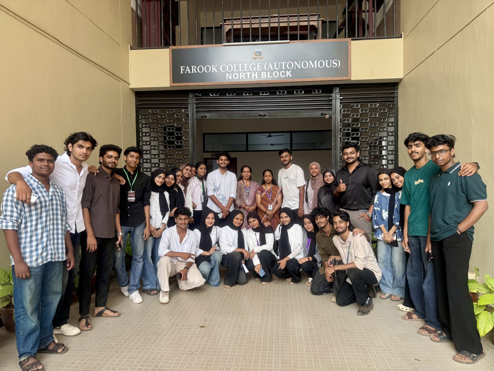
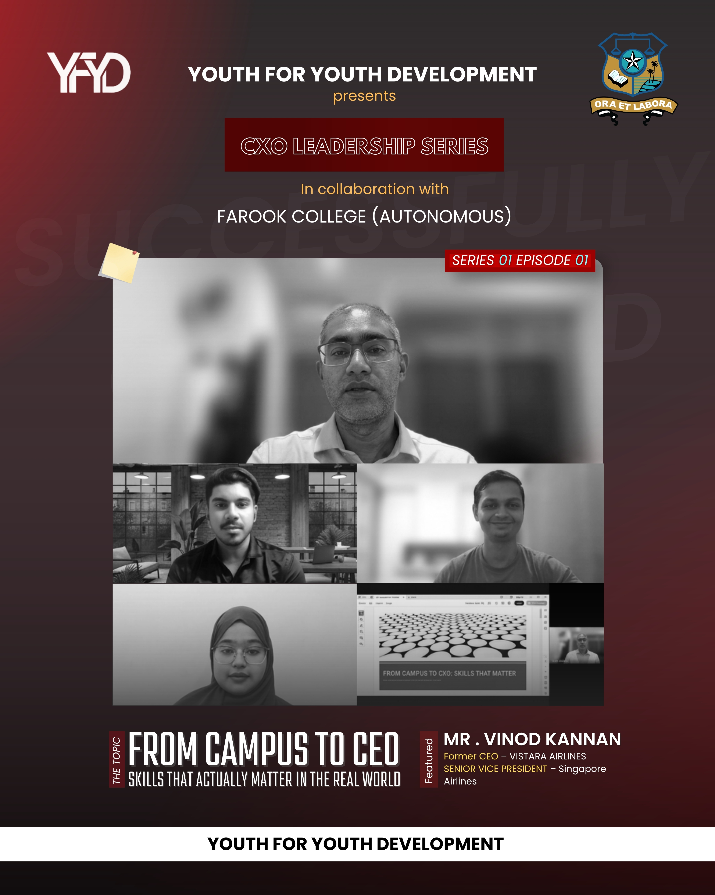

Marketing
Campaign planning, audience strategy, and growth execution.
Corporate Standards. Student Potential. Real-World Exposure.
Youth for Youth Development (YFYD) is built on corporate standards with a defined hierarchy and department model. We prepare students for professional environments before they enter the workforce by combining mentorship, training, communications, operations, and execution-focused events.
Core Positioning
YFYD is not just a student club model. It is a structured youth platform that mirrors corporate systems, so members experience team ownership, planning, accountability, and cross-functional collaboration in real time.
"Students do not wait for the corporate world, they begin training for it inside YFYD."
Corporate Department Structure
Every department is designed to provide real-life corporate exposure so members develop practical skills before stepping into the professional world.
Campaign planning, audience strategy, and growth execution.
Member onboarding, culture development, and people processes.
Budgeting, transparent tracking, and financial discipline.
Execution planning, timelines, and cross-team coordination.
Compliance awareness, policy alignment, and governance basics.
Digital tools, systems support, and process automation.
Visual identity, consistency, and professional presentation.
Internal clarity, institutional outreach, and public messaging.
Guidance channels connecting students with experienced voices.
Skill modules that translate theory into execution capability.
Events and Institutional Impact

Flagship Event

Excel Leadership Series
Testimonials and Credibility
Industry Feedback
"It was a great experience interacting with such an enthusiastic and driven community. YFYD is doing an excellent job in empowering students. This is a great initiative and we have to keep this going."
Mr. Vinod Kannan
Former CEO - Vistara Airlines
Senior Vice President - Singapore Airlines
Onboarding Funnel
Start with the Join Community step, download the prospectus, acknowledge the code of conduct, and complete the application form.